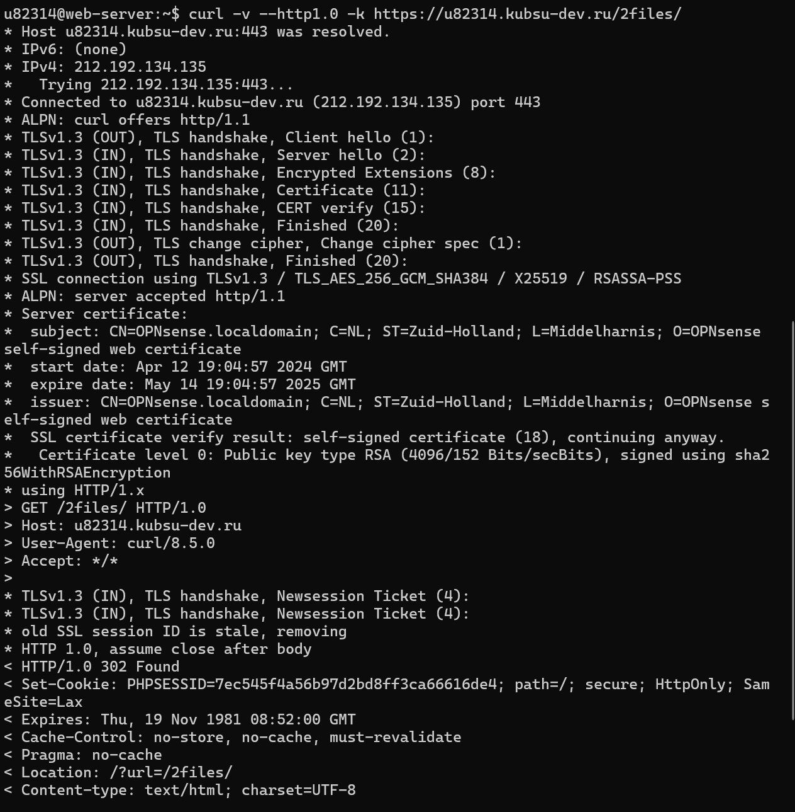
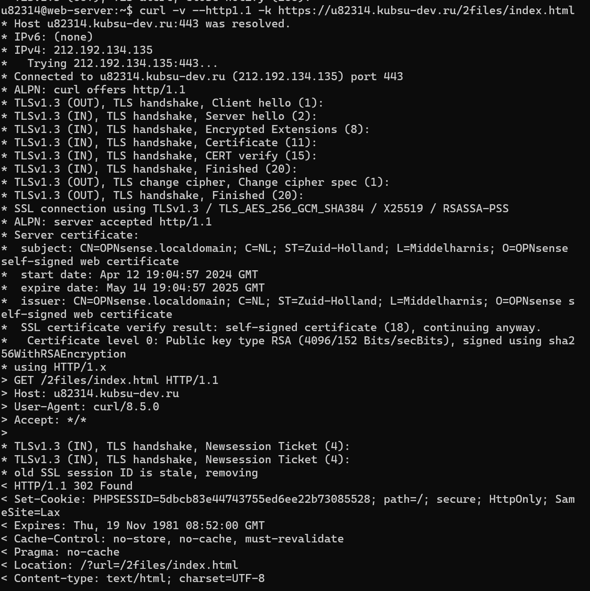
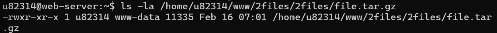
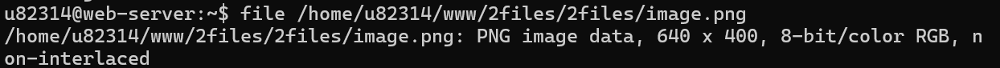
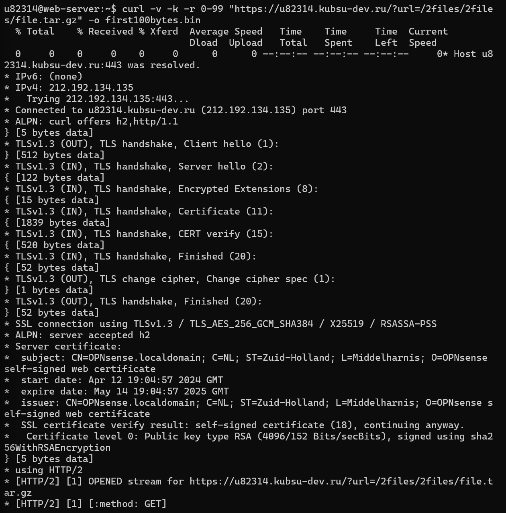
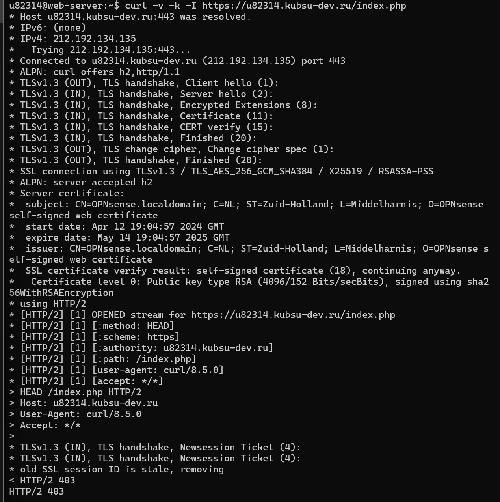
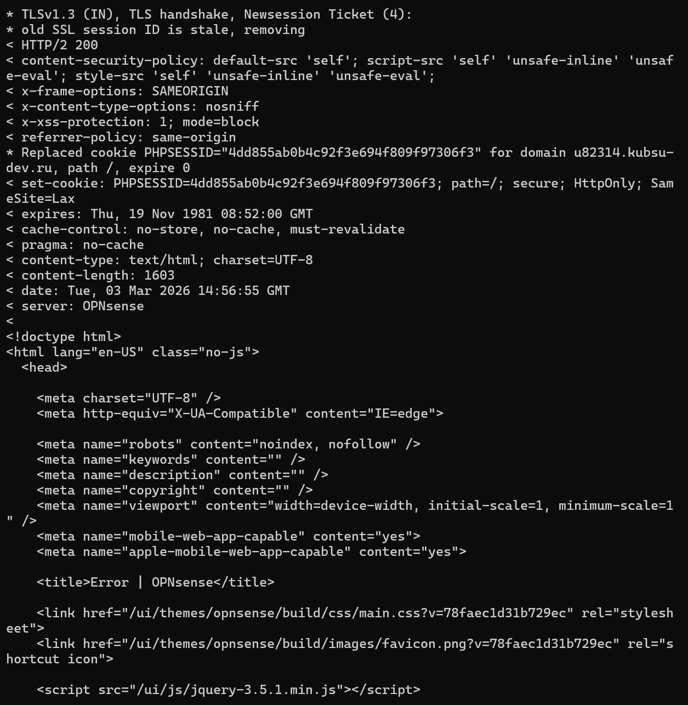

Команда:
curl -v --http1.0 -k https://u82314.kubsu-dev.ru/2files/
Результат:
Примечание: Сервер перенаправляет запросы на HTTPS и через основной скрипт.

Скриншот 2.1 - GET запрос в HTTP/1.0
Команда:
curl -v --http1.1 -k https://u82314.kubsu-dev.ru/2files/index.html
Результат:

Скриншот 2.2 - GET запрос в HTTP/1.1
Команда:
curl -v -k -I https://u82314.kubsu-dev.ru/2files/2files/file.tar.gz
Результат (локальная проверка):
ls -la /home/u82314/www/2files/2files/file.tar.gz -rwxr-xr-x 1 u82314 www-data 11335 Feb 16 07:01 file.tar.gz
Размер файла: 11335 байт

Скриншот 2.3 - Размер файла file.tar.gz
Команда:
file /home/u82314/www/2files/2files/image.png
Результат:
/home/u82314/www/2files/2files/image.png: PNG image data, 640 x 400, 8-bit/color RGB, non-interlaced
Медиатип: image/png
Характеристики:

Скриншот 2.4 - Медиатип image.png
Команда (с CSRF-токеном):
curl -v -k -X POST https://u82314.kubsu-dev.ru/index.php \ -b cookies.txt \ -H "X-CSRFToken: tvHh6H1vOEPKbIr080laPw" \ -d "comment=Тестовый комментарий от u82314&name=u82314"
Результат: HTTP/2 200 OK
Детали ответа:
Команда (Range запрос):
curl -v -k -r 0-99 "https://u82314.kubsu-dev.ru/?url=/2files/2files/file.tar.gz" -o first100bytes.bin
Результат: HTTP/2 206 Partial Content
Детали ответа:

Скриншот 2.6 - Получение первых 100 байт
Команда:
curl -v -k -I https://u82314.kubsu-dev.ru/index.php
Результат: HTTP/2 403 Forbidden
Content-Type: text/html; charset=UTF-8
Кодировка: UTF-8
Примечание: Даже при отказе в доступе (403) сервер сообщает кодировку в заголовке Content-Type.

Скриншот 2.7 - Кодировка index.php (UTF-8)

Скриншот 2.5 - Отправка комментария (POST)